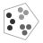
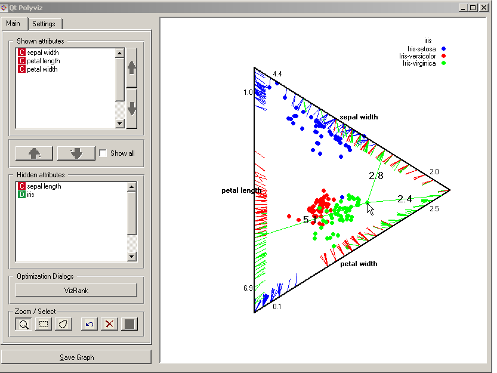
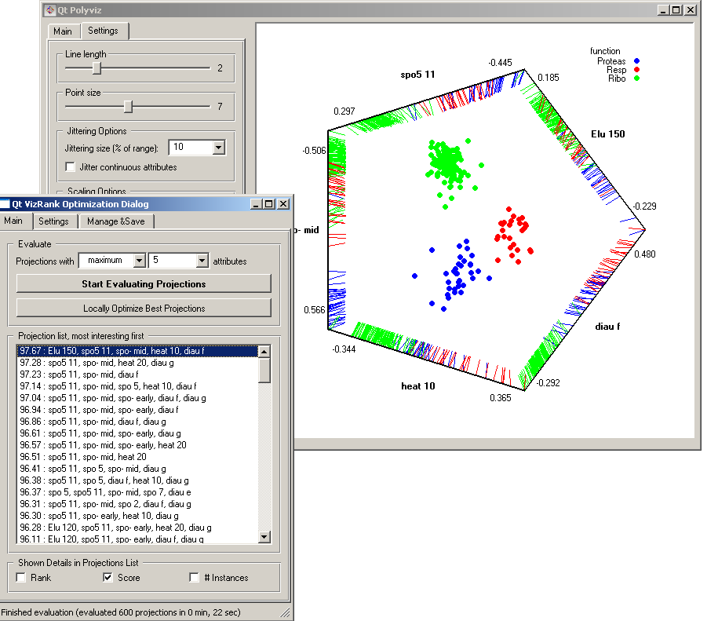

This is documentation for Orange 2.7. For the latest documentation, see Orange 3.
Polyviz¶
Polyviz visualization with explorative data analysis and intelligent data visualization enhancements.
Signals¶
- Inputs:
- Examples (ExampleTable)
Input data set.
- Example Subset (ExampleTable)
A subset of data instances from Examples.
- Attribute Selection List
List of attributes to be shown in the visualization.
- Outputs:
- Selected Examples (ExampleTable)
A subset of examples that user has manually selected from the scatterplot.
- Unselected Examples (ExampleTable)
All other examples (examples not included in the user’s selection).
- Attribute Selection List
List of attributes used in the visualization.
Description¶
Polyviz is a visualization technique similar to Radviz, but with a twist: instead of a single fixed attribute anchors, data points are now attracted to anchors with value-dependent positions. Consider the snapshot below, which shows a visualization of Iris data set using three of its attributes. The widget can show anchor lines when the pointer is over one of the data instances; the one shown in the snapshot has high value of petal width, and close to average value for the other two attributes. Notice that anchors (lines stemming from the data point) start in the points that are on attribute lines according to the value of that attribute. Since in this particular visualization we are showing three different attributes, the data instances are placed within the triangle.
Just like other point-based visualizations, Polyviz provides support for explorative data analysis and search for interesting visualizations. For further details on both, see the documentation on Scatter Plot widget. See the documentation on Radviz for details on various aspects controlled by the Settings tab. The utility of VizRank, an intelligent visualization technique, using brown-selected.tab data set is illustrated with a snapshot below.
